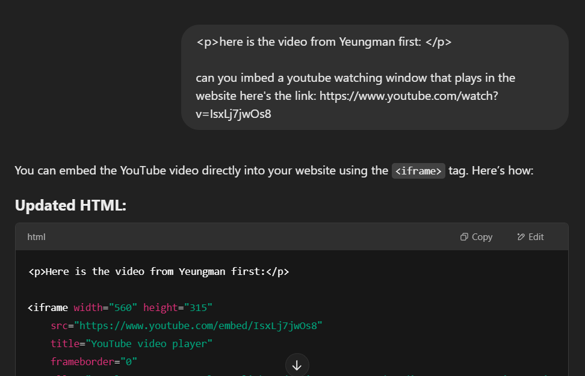

Anyone who struggles with cooking but wants to improve!
Whether you're a student, a busy professional, or just someone who wants to learn how to cook, this site is for you.
I know that cooking can be intimidating, it was for me in the begining too.
Don't worry if you have never even touched a spatula, I have easy to follow recipies that give you a step by step guides to follow!
Cooking is a great way to express your creativity and impress your friends and family or even your date.....
Image created using google Gemini.
What do I need to start? and What should one have??
fret not my friend, we start from the basics.
Here are some basic tools you should have in your kitchen:
Tool
Purpose
Knife
For chopping and slicing ingredients.
Cutting Board
A surface to chop on.
Pots and Pans
For cooking various dishes.
Measuring Cups
To measure ingredients accurately.
Mixing Bowls
For mixing ingredients.
Spatula
For flipping and stirring.
Whisk
For mixing liquids and dry ingredients.
These are just the basics, but as you get more into cooking, you can add more specialized tools to your collection.
Don't worry if you don't have all of these tools right away; you can start with just a few and build your collection over time.
Cooking is all about improvisation and using what you have!
Image created using google Gemini.
Where to Cook my first recipe Maanav??
I started with youtube, so can you. The abundant landscape of internet is filled with easy to follow recipies!!
Here are some of my favorite channels to get you started:
YEUNGMAN Cooking
- One of my favorite Cooktubers. He made me the cook I am today, making easy-to-follow vegetarian/vegan dishes.
Joshua Weissman
- Runner-up to YEUNGMAN, Joshua has a hybrid of Food Critic and Cook, but he is my go-to for new ideas.
Pailins Kitchen
- I love Asian food, especially Thai recipes, and when it comes to Thai, no one beats Ms. Pailin in terms of ease and authenticity.
How to Begin Maanav!? you say, I dont have any Idea you say!!
worry not we will start with one of my favorite, the recipe that look hard but is sooo easy that even a baby can make it
my friends I'm talking about making green curry, now we will see 2 videos showing how to make it. one from Yeungman, and the other from yours truly
here is the video from Yeungman first:
and here is my video on the same topic [its a recycled vid from my previous class project]:
now you can see how easy it is to make this dish, and you can look up on the table for what is needed for this!!
Ingredients
Ingredient
Description
Mixed Vegetables
Sugar snap peas, baby carrots, red peppers, tofu, mushrooms, red onions, baby tomatoes, or your choice!
Jasmine Rice
For the base of the dish.
Coconut Milk
Used for the curry sauce (e.g., Tru Label Coconut Mylk).
Cilantro and Green Onions
For garnish.
Green Curry Paste
For flavoring the curry.
Toasted Sesame Oil
For seasoning the rice.
Salt and Pepper
For seasoning.
Directions
Step
Description
1
Prep and cook your rice - wash with cold water and drain. Use 2 cups of rice to 2 cups of water in the rice cooker. Season with salt and pepper, and turn the rice cooker on.
2
Prep the snap peas by unstringing them.
3
Prep the rest of your vegetables by washing and having them ready for stir fry.
4
Dry off your extra firm tofu with a paper towel, and slice into cubes.
5
Heat a sauté pan with olive oil.
6
Sauté tofu, garlic, and onions, then add hard vegetables, followed by soft vegetables.
7
Add a generous tablespoon of green curry paste.
8
Sauté for a couple of minutes, then deglaze with coconut milk.
9
Let simmer for 1 minute, then turn off the heat.
10
Top cooked rice with toasted sesame oil, cilantro, and green onions.
11
Take a cup or bowl, scoop in some rice, pack it down gently, and place on a plate.
12
Plate green coconut curry around the rice and garnish with fresh chopped cilantro.
13
Enjoy your meal!
Why Learn Cooking? lets discuss that while going over few of my favorite dishes![that I made myself]
1: Cooking helps you eat healthier and save money.
2: It's a great way to impress your friends and family. My ma love my food, so does my father and brother!
Image I took when I made Pizza
3: It's a valuable life skill that will make you more independent. If I want to move out tommorow I don't have to worry about food everyday!
6: It's a great way to relax and destress after a long day. eat Chilli Mac that I made after work is the best R'n R you can get, espiecially with a few beers
Goes really good with Micheal bay movies.
7: You can make your favorite restaurant dishes at home. No need to spend time look for good Chinese or Indian food
8: You can control what goes into your food and avoid unhealthy additives.
Took a lot of time to put togheter, but man! was it worth it.
9: You can cook for a date and impress them with your skills! espiecially if you can make a good Pizza!
this is the second most easy dish I've made after Thai curry
Artificial Intelligence has indeed Aided me in making of this side
I used ChatGPT to help me with imbedding youtube vids, make little Picture Icons for the youtubers and help me figure out CSS and JS.

picture of my prompt for Youtube Imbedpicture of my prompt for CSS
AI was also used to fixing Accumulus bugs or Errors
picture of my prompt for Fixing JS
Lastly, AI helped me make a couple of pictures:
picture of my prompt for making the noob to pro pic.

 YEUNGMAN Cooking
YEUNGMAN Cooking
 Joshua Weissman
Joshua Weissman
 Pailins Kitchen
Pailins Kitchen